The Everything Options contains settings that modify the system or Everything.
To open the Everything Options window:
In Everything, from the Tools menu, click Options.
Select one of the "tabs" below:
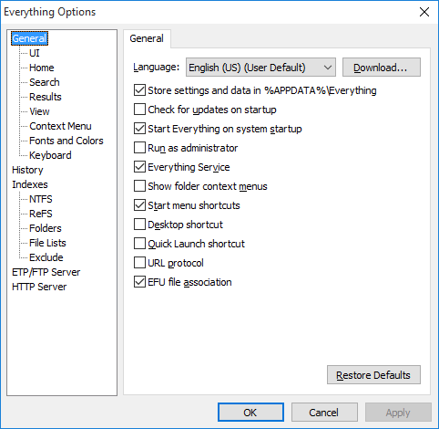
Contains settings for configuring the installation of Everything.
Language
Selects the language used for displaying text in Everything. If set to User Default the language is determined by the current users language for displaying text, (User Default) is displayed next to this language in the language selection combo.
Click the download button to the right of languages to open the download page for the Everything language pack in your web browser.
Store settings and data in %APPDATA%\Everything
Choose the location for storing settings and data. If enabled, settings and data are stored in %APPDATA%\Everything. If disabled, settings and data are stored in the same location as the Everything.exe.
This option is enabled in the installer by default and disabled in the portable version by default. Changing this setting will overwrite any existing settings.
Check for updates on startup
Check www.voidtools.com for Everything updates when starting Everything.
To include beta updates, see Beta updates.
Start Everything on system startup
Start Everything when Windows starts. When Everything starts from Windows startup, the tray icon is shown and the database is loaded and updated, no Everything search window is shown.
Run as administrator
If enabled and Everything is run with limited privileges, Everything will relaunch with administrative privileges.
The Everything service is not required when enabling this option.
When disabling this option you must manually restart Everything.
When enabled, applications run from Everything will also run as administrator.
Mapped network drives will also need to be created for the administrator account.
Everything service
Install the Everything service. The Everything service will allow the Everything search window to read and monitor the USN Journal on all NTFS volumes. Enabling this will allow Everything to run as a standard user.
Add the Search Everything... item to folder context menus. The folder context menu is displayed when you right click a folder in Windows. Clicking on the folder context menu item Search Everything... will launch Everything and populate the search with the selected folder.
Add Search Everything shortcut (and Uninstall Everything shortcut if uninstall.exe is present) to the start menu under Programs \ Everything.
Desktop shortcut
Add Search Everything shortcut to the Desktop.
Quick launch shortcut
Add Search Everything shortcut to the Quick launch toolbar.
To show the Quick Launch toolbar in Windows Vista or later:
Right click an empty spot on the taskbar.
From the Toolbars submenu, click New toolbar...
type in:
%userprofile%\AppData\Roaming\Microsoft\Internet Explorer\Quick Launch
Click Select Folder.
URL protocol
Open Everything from es: urls.
For example, when clicking on es:abc123 Everything will launch and populate the search with abc123.
EFU file association
Open EFU files with Everything. EFU files are Everything file lists, for more information please see File Lists.
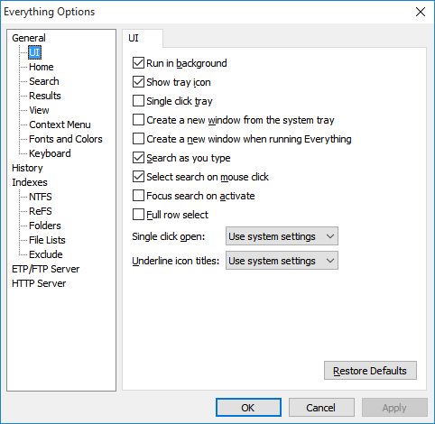
Contains settings for configuring the user interface.
Run in background
Keep Everything running in the background when all search windows are closed. If disabled and all search windows are closed, Everything will exit completely.
Show tray icon
Show the Everything tray icon.
Single click tray
If enabled, Everything will open from the tray icon with a single mouse click. If disabled, Everything will open from the tray icon with a double click.
Create a new window from the system tray
If enabled, always create a new search window from the system tray. If disabled, opening the search window from the tray will show an existing search window before creating a new search window.
Create a new window when running Everything
If enabled, always create a new search window when running Everything.exe or an Everything shortcut. If disabled, running Everything.exe or an Everything shortcut will show an existing search window before creating a new search window.
Search as you type
If enabled, each keystroke you press will update the search results. If disable, you must press enter to update the search results.
Select search on mouse click
Select all the search edit text when the search edit gains focus from a mouse click.
Focus search on activate
Focus the search edit, when Everything is activated from alt + tab or clicking on an Everything search window with the mouse.
Full row select
The whole row is selectable, otherwise only the name part is selectable.
Single click open
Open a file or folder with a single click or double click. To select a file or folder when single click is active hover over the item with the cursor.
Underline icon titles
Choose when filenames are underlined in single click mode.
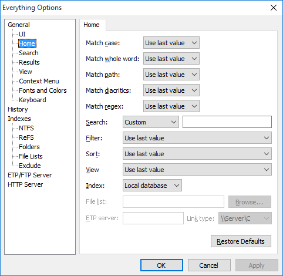
Contains settings for configuring the first search when a new Everything search window is shown.
Match case
The default match case setting. If set to use last value, the match case setting will be restored from the previously closed Everything search window.
Match whole word
The default match whole word setting. If set to use last value, the match whole word setting will be restored from the previously closed Everything search window.
Match path
The default match path setting. If set to use last value, the match path setting will be restored from the previously closed Everything search window.
Match diacritics
The default match diacritics setting. If set to use last value, the match diacritics setting will be restored from the previously closed Everything search window.
Match Regex
The default match regex setting. If set to use last value, the match regex setting will be restored from the previously closed Everything search window.
Search
The default search. If set to use last value, the search will be restored from the previously closed Everything search window. Set to custom to define your own default search.
Filter
The default filter. If set to use last value, the filter will be restored from the previously closed Everything search window.
Sort
The default sort. If set to use last value, the sort will be restored from the previously closed Everything search window if it was a fast sort. A fast sort is a sort by name, run count, date run or date recent changed.
To always keep the sort, see Always keep sort.
Index
The default index. If set to use last value, the index will be restored from the previously closed Everything search window.
File list
The filename of the file list when the index is set to a file list.
ETP server
The username, password, host and port of the ETP server when the index is set to a ETP server.
Link type
The link type of the ETP server when the index is set to an ETP server.
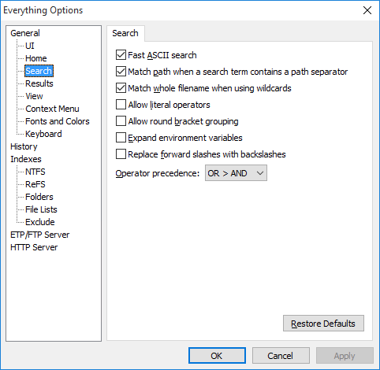
Contains settings for configuring the search.
Fast ASCII search
Use single byte comparisons for lower case ASCII characters.
Enabling this will greatly improve searching performance when match diacritics is enabled.
Disable this to allow Turkish I with dot to match lowercase i.
Match path when a search term contains a path separator
Match the full path and filename when a search term contains a backslash (\).
Disable this to find files with backslashes in the filename.
Match whole filename when using wildcards
If enabled, using wildcards must match the entire filename.
If disabled, wildcard matches can be found anywhere in the filename.
Allow literal operators
Allow AND, OR and NOT as operators.
Can cause issues when searching for filenames that include the string AND, OR or NOT.
Allow round bracket grouping
Allow ( and ) for grouping operators. Can cause issues when searching for filenames with the text ( and ).
Expand environment variables
Expand environment variables inside % quotes.
For example: %APPDATA% will expand to C:\Users\<Current User>\AppData\Roaming.
Can cause issues when searching for filenames that include a % character.
Replace forward slashes with backslashes
Forward slashes (/) are replaced with backslashes (\).
Can cause issues when searching for filenames that include a / character. File lists can contain URLs with forward slashes (/).
Operator precedence
Set the order in which operators are evaluated.
Set to OR > AND to evaluate OR operations first, for example, searching for A B | C D is the same as A (B | C) D.
Set to AND > OR to evaluate AND operations first, for example, searching for A B | C D is the same as (A B) | (C D).
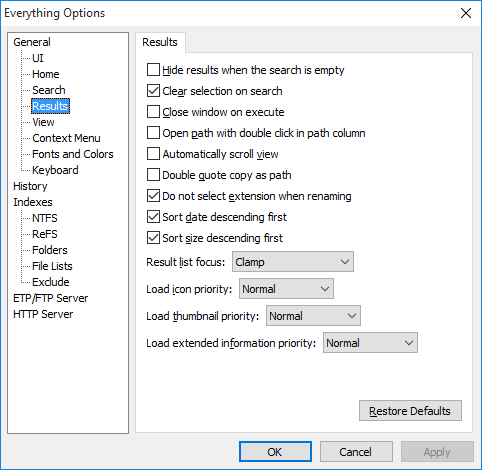
Contains settings for configuring the result list.
Hide results when the search is empty
The results are not shown until you type in a search.
Clear selection on search
Clear the selection each time the search changes. Disable to preserve the selection between searches.
Close window on execute
The Everything search window is closed immediately after opening an item.
Open path with double click
Paths in the path column can be opened with a double click.
Auto scroll view
Periodically scroll the result list when the mouse is dragged outside the visible area.
Double quote copy as path
Include double quotes when copying filenames to the clipboard.
Do not select extension when renaming
Enable to select the file part only, excluding the extension when renaming a file.
Sort date descending first
When sorting by date, display newest dates first.
Sort size descending first
When sorting by size, display the largest files first.
Result list focus
Can be one of the following:
| Value | Description |
|---|---|
| Clamp | The result list focus will be clamped to the top and bottom items. |
| Repeat | The result list focus will wrap around the top and bottom items. |
| Repeat with search | The result list focus will wrap around the top and bottom items to the search edit. |
Load icon priority
The thread priority for loading icons.
Load thumbnail priority
The thread priority for loading thumbnails.
Load extended information priority
The thread priority for loading file dates, sizes and attributes.
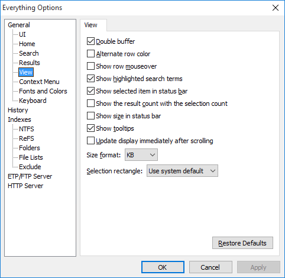
Contains settings for configuring the view.
Double buffer
Use an off screen buffer when rendering the result list. Enable to avoid flickering when rendering. Disable to draw directly to the screen.
Alternate row color
Show odd and even rows in a different color.
Show row mouseover
Show the row the mouse is currently over in a different color.
Show highlighted search terms
Show highlighted search terms.
Show selected item in status bar
Show the full path and filename of the selected file in the status bar.
The status bar format for the selected item can be customized with the statusbar_selected_item_format ini option.
Show the result count with the selection count
Show the total number of results with the selection count in the status bar.
Show size in status bar
Shows the total file selection size in the status bar.
Folder are not included.
If there is no selection the total file size is shown.
Show tooltips
Show helpful tooltips in the Everything Options window.
Update display immediately after scrolling
Force the display to update immediately after it is scrolled. Enabling this can cause performance issues for mice with high refresh rates.
Size format
The size format. Can be one of the following values:
| Value | Description |
|---|---|
| Auto | Use the best format depending on the size. |
| Bytes | Always display sizes in bytes. |
| KB | Always display sizes in KB. |
Selection rectangle
The selection rectangle display type. Can be one of the following values:
| Value | Description |
|---|---|
| Use system default. | Use the same setting as Windows Explorer. |
| Translucent mask | Show a transparent selection mask. Translucency and color can be customized. |
| XOR mask | Display every other pixel as an inverted pixel. |
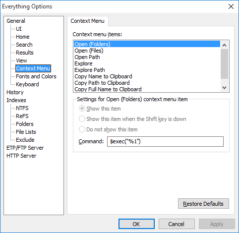
Contains settings for configuring the context menu. The context menu is displayed when right clicking a file or folder in the Everything result list.
Show this item
Show this item when the Shift key is down
Do not show this item
Choose the visibility of this context menu item.
Command
The command for the selected context menu item.
The following command syntax can be used:
| command | Description |
|---|---|
| $exec(filename) | Executes the specified filename. |
| $openpath(filename) | Opens the folder containing the specified filename and selects the specified filename. |
| $parent(filename) | The parent folder of the specified filename |
| $pathpart(filename) | The path part of filename |
| $namepart(filename) | The name and extension part of filename |
| %1 | The selected filename. |
| $$ | A single literal $ |
| $( | A single literal ( |
| $) | A single literal ) |
See Customizing for more information.
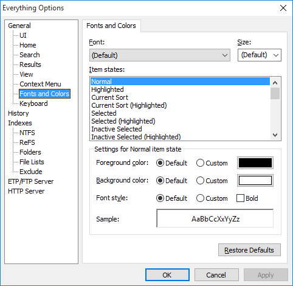
Contains settings for configuring the font and colors in Everything.
Font
Size
The result list font family and size. Use (Default) to use the same settings as the Windows icon font.
To customize other fonts, please see Everything.ini.
Foreground color
The text color for the selected item. Select a custom color by clicking on the color button.
Background color
The background color for the selected item. Select a custom color by clicking on the color button.
Font style
The font style. Can be bold or normal.
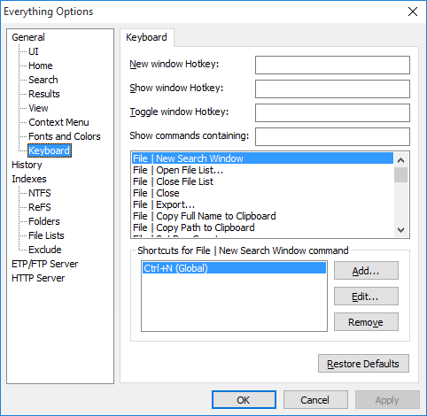
Contains settings for configuring keyboard shortcuts and hotkeys.
For a list of all the default keyboard shortcuts, please see Keyboard Shortcuts.
New window hotkey
Show window hotkey
Toggle window hotkey
New window will always show a new Everything search window. Show window will show an existing window if one exists, otherwise a new search window is created. Toggle window will hide any existing window that is in the foreground, otherwise an existing window is shown if one exists, otherwise a new search window is created.
Press a new keyboard shortcut to set the hotkey.
Show commands containing
Type in a search to filter the command list by name.
Shortcuts for the selected command
To add a new keyboard shortcut to the selected command or edit an existing keyboard shortcut for the selected command:
Click Add... or Edit...
Choose a location to use the shortcut. Can be one of the following values:
| Value | Description |
|---|---|
| Global | The shortcut can be used anywhere in Everything. |
| Search Edit | The shortcut can only be used in the search edit. |
| Result List | The shortcut can only be used in the result list. |
Press a new shortcut key for shortcut key.
Take note of the shortcut key currently used by list, These existing keyboard shortcuts will be removed when clicking OK.
Click OK.
To remove a keyboard shortcut:
Select the keyboard shortcut in shortcuts for the selected command.
Click Remove.
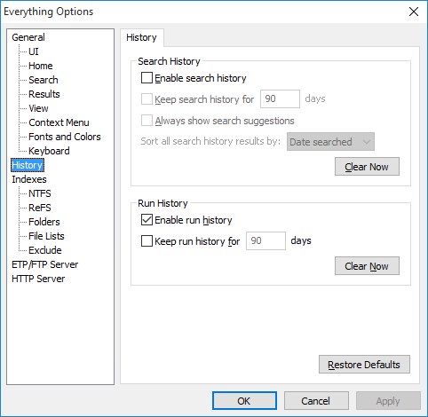
Contains settings for configuring search history and run history.
Enable search history
Remember search history. A search is added to the search history when you press enter from the search edit or when you act on a file or folder in the result list. Disabling search history does not clear the search history. Click Clear Now to permanently delete search history.
Press Ctrl + Space to complete a search using the search history, if there's more than one way to complete the search a suggestion list is shown.
Press the drop down arrow on the right to show search suggestions.
See Search History for more information.
Keep search history
Specify the number of days to keep search history. When the search history is loaded, searches that occurred longer than the specified number of days will be removed.
if disabled search history is kept forever.
Always show search suggestions
Show the suggestion list after every change to the search.
Consider disabling Search as you type.
See Everything.ini for more options.
Enable run history
Remember the number of times each file or folder has been run. When you execute an item in the result list, its run count is incremented by one. You can set the run count for an item in the result list by right clicking it and selecting Set run count.... Disabling run history will not delete run history. Click Clear Now to permanently delete run history.
Press enter from the search edit will focus the result with the highest run count.
Results can be sorted by run count.
See runcount: and daterun: to search run history.
See Run History for more information.
Keep run history
Specify the number of days to keep run history. When the run history is loaded, searches that occurred longer than the specified number of days will be removed.
if disabled run history is kept forever.
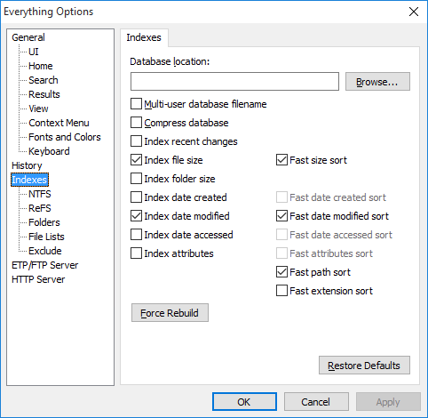
Contains settings for configuring the indexes.
Database location
Override the default location for the database. The default location is:
%LOCALAPPDATA%\Everything
If Store settings and data in %APPDATA%\Everything is disabled, the database location is the same as the Everything.exe location.
Click Browse... to browse for a database location.
Multi-user database filename
Normally Everything uses the filename Everything.db for the database. If enabled Everything will use the unique filename Everything.<ComputerName>.<UserName>.db. This might be useful when using the portable version of Everything on a thumb drive on different computers.
Compress database
Compress the database with Bzip 2. Can improve loading performance on very slow hard drives at the cost of higher CPU usage when loading and saving.
Index recent changes
Maintain a separate recent change sorted database of all file system changes that can be searched with rc: or sorted by date recently changed.
Index file size
Include file size information in the index.
Size information is maintained in real time.
Enable to search for size information instantly.
Greatly improves sorting by size performance.
Requires an additional 8 bytes of memory per file.
fast size sort
Maintain a separate size sorted database of files.
Enable to sort by size instantly.
Enable to make Everything remember this sort between searches.
Requires an additional 4-8 bytes of memory per file.
Index folder size
Include folder size information in the index.
Size information is maintained in real time.
Enable to search for folder size information instantly.
Requires an additional 8 bytes of memory per folder.
Folder size will not include excluded files.
Index file date created
Include date created information in the index.
Date created information is maintained in real time.
Enable to search for date created information instantly.
Greatly improves sorting by date created performance.
Requires an additional 8 bytes of memory per file and folder.
fast date created sort
Maintain a separate date created sorted database of files and folders.
Enable to sort by date created instantly.
Enable to make Everything remember this sort between searches.
Requires an additional 4-8 bytes of memory per file.
Index file date modified
Include date modified information in the index.
Date modified information is maintained in real time.
Enable to search for date modified information instantly.
Greatly improves sorting by date modified performance.
Requires an additional 8 bytes of memory per file and folder.
fast date modified sort
Maintain a separate date modified sorted database of files and folders.
Enable to sort by date modified instantly.
Enable to make Everything remember this sort between searches.
Requires an additional 4-8 bytes of memory per file.
Index file date accessed
Include date accessed information in the index.
Date accessed information is maintained in real time.
Enable to search for date accessed information instantly.
Greatly improves sorting by date accessed performance.
Requires an additional 8 bytes of memory per file and folder.
fast date accessed sort
Maintain a separate date accessed sorted database of files and folders.
Enable to sort by date accessed instantly.
Enable to make Everything remember this sort between searches.
Requires an additional 4-8 bytes of memory per file.
Index file attributes
Include attributes information in the index.
Attributes information is maintained in real time.
Enable to search for attributes information instantly.
Greatly improves sorting by attributes performance.
Requires an additional 4 bytes of memory per file and folder.
fast attributes sort
Maintain a separate attributes sorted database of files and folders.
Enable to sort by attributes instantly.
Enable to make Everything remember this sort between searches.
Requires an additional 4-8 bytes of memory per file.
fast path sort
Maintain a separate path sorted database of files and folders.
Enable to sort by path instantly.
Enable to make Everything remember this sort between searches.
Requires an additional 4-8 bytes of memory per file.
fast extension sort
Maintain a separate extension sorted database of files and folders.
Enable to sort by extension instantly.
Enable to make Everything remember this sort between searches.
Requires an additional 4-8 bytes of memory per file.
Force Rebuild
Rebuild the Everything.db database.
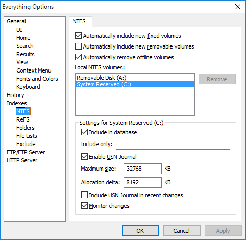
Contains settings for configuring NTFS volumes and NTFS indexing.
Auto include new fixed volumes
Automatically include new fixed volumes in Everything.
Auto include new removable volumes
Automatically include new removable volumes in Everything.
Everything must rebuild the database when a volume path, volume guid, the USN Journal ID changes or the volume goes offline.
Enable USN Journal
Enable USN Journal logging on the selected NTFS volume. Everything uses the USN Change journal to index and monitor changes to NTFS volumes.
Maximum size
Set the maximum size of the USN Journal in KB. If Everything is rebuilding the database after restarting Windows, try increasing this size to at least 32768 KB.
If the journal grows larger than this value it is truncated by removing the specified allocation delta from the beginning of the log.
Allocation delta
Specify how much is removed from the start of the USN Journal in bytes when it has reached its maximum size.
Include in database
Include this NTFS volume in the Everything index.
Include USN Journal in recent changes
Load the entire USN Journal for this volume into the recent changes list. See Recent changes for more information.
Include only
semicolon delimited list of folders to include on this NTFS volume. Leave empty to include all folders.
Monitor changes
Keep the NTFS index of this NTFS volume up to date.
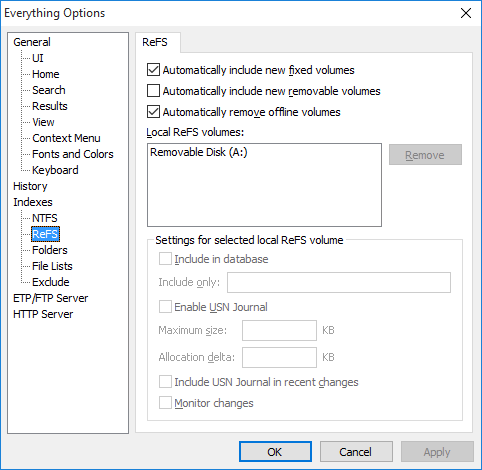
Contains settings for configuring ReFS volumes and ReFS indexing.
Auto include new fixed volumes
Automatically include new fixed volumes in Everything.
Auto include new removable volumes
Automatically include new removable volumes in Everything.
Everything must rebuild the database when a volume path, volume guid, the USN Journal ID changes or the volume goes offline.
Enable USN Journal
Enable USN Journal logging on the selected ReFS volume. Everything uses the USN Change journal to index and monitor changes to ReFS volumes.
Maximum size
Set the maximum size of the USN Journal in KB. If Everything is rebuilding the database after restarting Windows, try increasing this size to at least 32768 KB.
If the journal grows larger than this value it is truncated by removing the specified allocation delta from the beginning of the log.
Allocation delta
Specify how much is removed from the start of the USN Journal in bytes when it has reached its maximum size.
Allocation delta is currently ignored for ReFS volumes.
Include in database
Include this ReFS volume in the Everything index.
Include USN Journal in recent changes
Load the entire USN Journal for this volume into the recent changes list. See Recent changes for more information.
Include only
semicolon delimited list of folders to include on this ReFS volume. Leave empty to include all folders.
Monitor changes
Keep the ReFS index of this ReFS volume up to date.
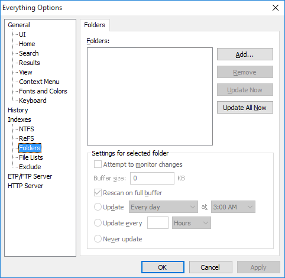
Contains settings for configuring folder indexes.
Folders
The list of folders to include in the Everything index. Can be used to index Window shares, NAS, CDRoms, DVDRoms, Fat and Fat32 volumes.
To add a folder to the list, click Add....
To remove a folder from the list click Remove....
To update a folder in the list now, click Update Now.
To update all folders in the list now, click Update All Now
Attempt to monitor changes
Attempt to monitor changes to the selected folder.
Update
Choose an option for when to update the selected folder.
See Folder Indexing for more information.
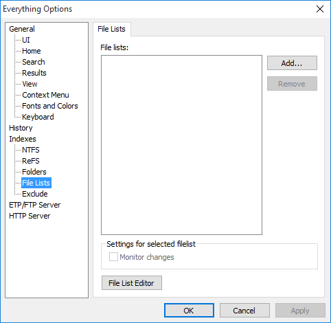
Contains settings for configuring file lists indexes.
File lists
The list of file lists to include in the Everything index.
To add a file list to the list, click Add....
To remove a file list from the list, click Remove.
Click the File List Editor button to open the file lists editor.
The file list editor can create a new file list or edit an existing one.
See File lists for more information.
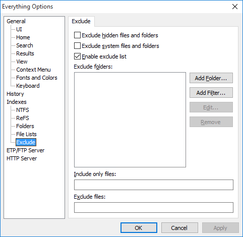
Contains settings for exclude files and folders from the index.
Exclude files and folders that have the hidden attribute set.
Exclude system files and folders
Exclude files and folders that have the system attribute set.
Exclude folders
A list of folders to exclude from the index.
To add a folder to the list, click Add Folder....
To add a wildcard filter to the list, click Add Filter....
To add a regex filter to the list, click Add Filter.... and prefix your filter with regex:
To remove a folder or filter from the list, click Remove.
For example, to exclude the windows folders:
Click Add Folder....
Type in:
C:\Windows
Click OK.
Include only files
A semicolon delimited wildcard filter list of files to include. Leave empty to include all files.
For example, include only mp3 and mkv files:
*.mp3;*.mkv
Prefix a filter with regex: to enable regex.
For example, to include only files starting with A-M:
regex:^[A-M]
Exclude files
A semicolon delimited wildcard filter list of files to exclude. Leave empty to include all files.
For example, exclude db files
*.db
Prefix a filter with regex: to enable regex.
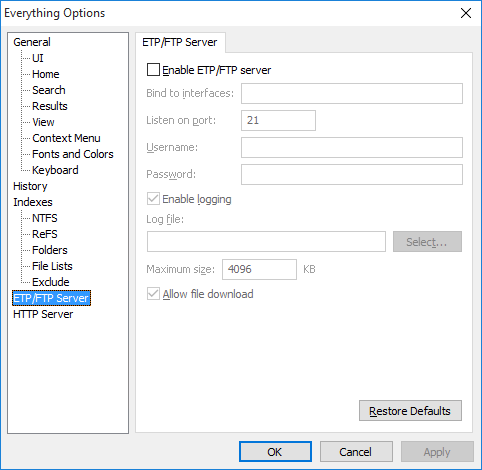
Contains settings for configuring a ETP/FTP server to access your files remotely from Everything or a FTP client. For more information see ETP/FTP Server.
Enable ETP/FTP server
Enable the ETP/FTP server.
Bind to interfaces
Bind the listening socket to the specified interfaces. Use 127.0.0.1 to bind to the loopback adaptor. Only local connections can be made to the loopback adaptor. Leave empty to bind to all interfaces.
Listen on port
Set the listening socket port. The ETP/FTP client must also connect on this port.
Username
The ETP/FTP username. The user must enter the correct username and password before performing an action. Leave empty to ignore the username. The username is sent as raw text.
Password
The ETP/FTP password. The user must enter the correct username and password before performing an action. Leave empty to ignore the password. The password is sent as raw text.
Enable logging
Log all ETP/FTP events to a log file.
Log file
The filename of the log file. Click Select to choose the log filename.
Maximum size
The maximum size of the log file in KB. The log file is trimmed from the start when it is larger than this size.
Allow file download
Allow files to be downloaded from the ETP/FTP server. Disable to only allow browsing.
Use multiple instances to create an ETP/FTP server with a custom index.
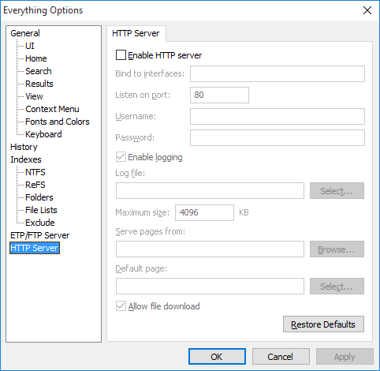
Contains settings for configuring a HTTP server to access your files remotely from a web browser. For more information see HTTP Server.
Enable HTTP server
Enable the HTTP server.
Bind to interfaces
Bind the listening socket to the specified interfaces. Use 127.0.0.1 to bind to the loopback adaptor. Only local connections can be made to the loopback adaptor. Leave empty to bind to all interfaces.
Listen on port
Set the listening socket port. The web browser must also connect on this port.
Username
The HTTP username. The user must enter the correct username and password before performing an action. Leave empty to ignore the username. The username is sent as raw text.
Password
The HTTP password. The user must enter the correct username and password before performing an action. Leave empty to ignore the password. The password is sent as raw text.
Enable logging
Log all HTTP events to a log file.
Log file
The filename of the log file. Click Select to choose the log filename.
Maximum size
The maximum size of the log file in KB. The log file is trimmed from the start when it is larger than this size.
Serve pages from
Select the folder to load HTTP files from. These files are not required to be in the index. Leave empty to server files from %APPDATA%\Everything\HTTP Server.
Default page
Select the default page. Leave blank to show a list of volumes.
Allow file download
Allow files to be downloaded from the HTTP server. Disable to only allow browsing.
Use multiple instances to create an HTTP server with a custom index.
Settings are stored in your Everything.ini.
To make a backup of all settings:
In Everything, type in the following search and press ENTER:
/config_save
Choose a filename and destination and click Save.
To restore all settings:
In Everything, type in the following search and press ENTER:
/config_load
Select a Everything.ini and click Open.
Click the Restore defaults button in the bottom right to load the defaults for the current page.
To reset all settings to their default values, see Everything.ini